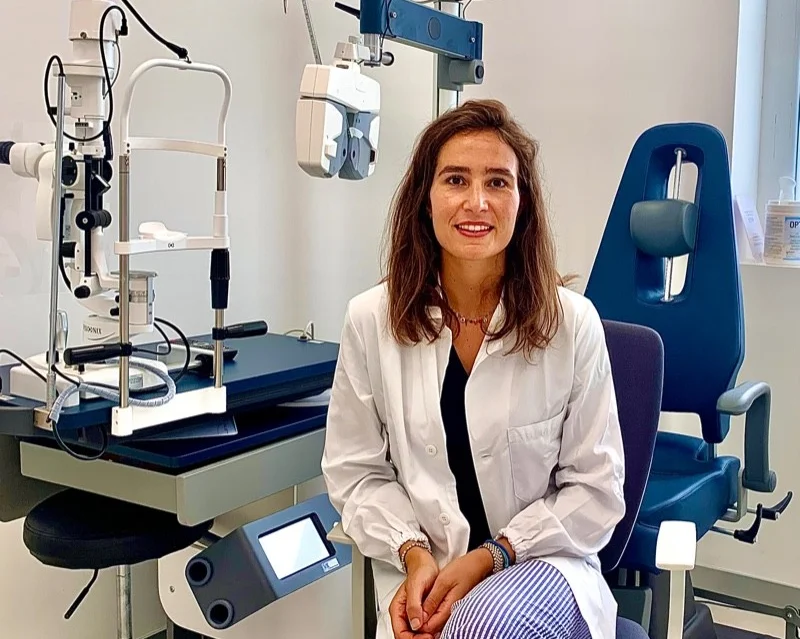

Dottoressa
Veronica Forlani
Medico Chirurgo Specialista in Oftalmologia
Dirigente Medico U. O. Oculistica, Auxologico IRCCS, Milano


formazione
Laurea in Medicina e Chirurgia con Lode presso l’Università Alma Mater Studiorum di Bologna nel 2016
Specializzazione in Oftalmologia con Lode presso l’Università degli Studi di Milano nel 2021 (Polo Universitario Ospedale Luigi Sacco, Direttore Prof. Giovanni Staurenghi)
Attività
Visita oculistica
Valutazione completa della funzionalità visiva con esame della vista e prescrizione delle lenti, controllo della pressione intraoculare e del fundus oculi con dilatazione della pupilla. Si consiglia la sospensione delle lenti a contatto da almeno 2 giorni prima della visita e si raccomanda di portare con sé i propri occhiali. Le eventuali terapie oculari in atto non devono essere sospese.
Glaucoma
Diagnosi e trattamento della patologia glaucomatosa con l’integrazione alla visita della diagnostica strumentale e della perimetria computerizzata.
Patologie retiniche
Gestione della Degenerazione Maculare Senile, della Retinopatia Diabetica, delle occlusioni vascolari retiniche e delle altre patologie maculari e retiniche più rare.
Patologie della superficie oculare
Gestione dell’Occhio Secco, delle dislacrimie e delle più complesse patologie della superficie oculare, problematiche sempre più comuni tra adulti e ragazzi. Si consiglia la sospensione delle lenti a contatto qualche giorno prima.
Visita oftalmoplastica
Focus della visita incentrato sulla patologie palpebrale e degli annessi oculari: diagnosi, terapia medica ed eventuale chirurgia ambulatoriale o in sala operatoria.
Check-up refrattivo
Accertamenti preoperatori completi sul segmento anteriore e posteriore dell’occhio, indispensabili per pianificare la chirurgia refrattiva. Occorre sospendere l’utilizzo delle lenti a contatto almeno 2 settimane prima. Prevede anche la dilatazione della pupilla.
OCT Spectralis
Esame indolore e non invasivo che acquisisce immagini ad alta risoluzione della retina e del nervo ottico. Indispensabile per la gestione delle maculopatie e del glaucoma. Può essere necessaria la dilatazione della pupilla
Topografia corneale
Esame indolore e non invasivo che studia la morfologia e lo spessore corneale. Impiegato nella diagnosi e follow-up delle patologie corneali come il cheratocono, è inoltre fondamentale per la pianificazione della chirurgia refrattiva. Non richiede dilatazione della pupilla
Angio-OCT Spectralis
Esame indolore e non invasivo che, senza l’utilizzo di un mezzo di contrasto, permette una precisa analisi della vascolarizzazione retinica e coroideale. Indispensabile per la diagnosi della degenerazione maculare senile essudativa. Può essere necessaria la dilatazione della pupilla
Campo Visivo
Esame funzionale che valuta la percezione luminosa di ciascun occhio, esame cardine per la diagnosi e follow-up del glaucoma e di molte altre patologie oftalmologiche e neuroftalmologiche. Per una corretta esecuzione è fondamentale una buona collaborazione da parte del paziente. Non richiede dilatazione della pupilla
Tutta l’attività chirurgica non viene eseguita in sede ma presso
“Auxologico IRCCS Capitanio”, via Mercalli 28, 20122 Milano
Chirurgia della cataratta
La cataratta è l’opacizzazione del cristallino, la lente intraoculare che usiamo per la messa a fuoco. Con l’età il cristallino tende ad opacizzarsi e conseguentemente la vista cala. Con l’intervento chirurgico si toglie il cristallino opacizzato e si inserisce al suo posto una lente artificiale trasparente, che rimarrà in sede tutta la vita. L’intervento si fa in sala operatoria in regime di day hospital con un’anestesia topica o locale
Chirurgia refrattiva
Chirurgia che consente la correzione dei difetti refrattivi (miopia, astigmatismo e ipermetropia) tramite l’utilizzo di laser ad eccimeri e femtosecondi. Consente l’immediata sospensione degli occhiali e un rapido recupero post-chirurgico
Chirurgia Oftalmoplastica
Chirurgia delle palpebre e degli annessi oculari, si effettuano interventi di:
- escissione di neoformazioni palpebrali e ricostruzione
- correzione di entropion ed ectropion
- blefaroplastica superiore
- correzione di ptosi
- escissione di pterigio, calazio e xantelasma
Impianto di IOL Premium
Con la chirurgia della cataratta si possono impiantare lenti di ultima generazione molto più performanti rispetto alle lenti standard: consentono la messa a fuoco da lontano e vicino senza l’utilizzo degli occhiali. Possono essere indicate anche in pazienti più giovani per correggere difetti refrattivi
Iniezioni intravitreali
Trattamenti indicati nelle maculopatie essudative, nella retinopatia diabetica e nelle patologie vascolari retiniche. Si esegue in sala operatoria in regime di day hospital
Capsulotomia Yag Laser
Procedura ambulatoriale rapida e indolore indicata nei casi di cataratta secondaria. Con il termine cataratta secondaria ci si riferisce alla opacizzazione della capsula che contiene la lente intraoculare artificiale, può insorgere mesi o anni dopo l’intervento chirurgico. E’ necessaria la dilatazione della pupilla. Il recupero è immediato
Iridotomia Yag laser
Procedura laser indicata in pazienti con angolo irido-corneale occludibile, crea un foro irideo microscopico che permette la comunicazione tra la camera anteriore e la camera posteriore dell’occhio prevenendo il rialzo della pressione intraoculare nei soggetti predisposti
Laser retinico
Trattamento laser retinico periferico che si esegue in caso di fori o rotture retiniche, prima che causino un distacco di retina. Indicato anche nella gestione di alcune forme di retinopatia diabetica e di occlusioni vascolari retiniche. E’ necessaria la dilatazione della pupilla
Attività
Visita oculistica
Valutazione completa della funzionalità visiva con esame della vista e prescrizione delle lenti, controllo della pressione intraoculare e del fundus oculi con dilatazione della pupilla. Si consiglia la sospensione delle lenti a contatto da almeno 2 giorni prima della visita e si raccomanda di portare con sé i propri occhiali. Le eventuali terapie oculari in atto non devono essere sospese.
Check-up refrattivo
Accertamenti preoperatori completi sul segmento anteriore e posteriore dell’occhio, indispensabili per pianificare la chirurgia refrattiva. Occorre sospendere l’utilizzo delle lenti a contatto almeno 2 settimane prima. Prevede anche la dilatazione della pupilla.
Patologie retiniche
Gestione della Degenerazione Maculare Senile, della Retinopatia Diabetica, delle occlusioni vascolari retiniche e delle altre patologie maculari e retiniche più rare.
Glaucoma
Diagnosi e trattamento della patologia glaucomatosa con l’integrazione alla visita della diagnostica strumentale e della perimetria computerizzata.
Curva Tonometrica
Monitoraggio della pressione intraoculare nelle 12 ore, richiede la disponibilità del paziente a presentarsi in studio più volte durante la giornata.
Patologie della superficie oculare
Gestione dell’Occhio Secco, delle dislacrimie e delle più complesse patologie della superficie oculare, problematiche sempre più comuni tra adulti e ragazzi. Si consiglia la sospensione delle lenti a contatto qualche giorno prima.
Visita oftalmoplastica
Focus della visita incentrato sulla patologie palpebrale e degli annessi oculari: diagnosi, terapia medica ed eventuale chirurgia ambulatoriale o in sala operatoria
Visita oculistica pediatrica
Valutazione completa del sistema visivo con test specifici per l’età pediatrica, correzione dei difetti refrattivi ed eventuale supporto ortottico. Lo scopo è seguire il piccolo paziente in tutte le fasi della crescita per consentire il corretto sviluppo della funzionalità visiva.
OCT Spectralis
Esame indolore e non invasivo che acquisisce immagini ad alta risoluzione della retina e del nervo ottico. Indispensabile per la gestione delle maculopatie e del glaucoma. Può essere necessaria la dilatazione della pupilla.
Angio-OCT Spectralis
Esame indolore e non invasivo che, senza l’utilizzo di un mezzo di contrasto, permette una precisa analisi della vascolarizzazione retinica e coroideale. Indispensabile per la diagnosi della degenerazione maculare senile essudativa. Può essere necessaria la dilatazione della pupilla.
Topografia corneale
Esame indolore e non invasivo che studia la morfologia e lo spessore corneale. Impiegato nella diagnosi e follow-up delle patologie corneali come il cheratocono, è inoltre fondamentale per la pianificazione della chirurgia refrattiva. Non richiede dilatazione della pupilla
Campo Visivo
Esame funzionale che valuta la percezione luminosa di ciascun occhio, esame cardine per la diagnosi e follow-up del glaucoma e di molte altre patologie oftalmologiche e neuroftalmologiche. Per una corretta esecuzione è fondamentale una buona collaborazione da parte del paziente. Non richiede dilatazione della pupilla
Chirurgia della cataratta
La cataratta è l’opacizzazione del cristallino, la lente intraoculare che usiamo per la messa a fuoco. Con l’età il cristallino tende ad opacizzarsi e conseguentemente la vista cala. Con l’intervento chirurgico si toglie il cristallino opacizzato e si inserisce al suo posto una lente artificiale trasparente, che rimarrà in sede tutta la vita. L’intervento si fa in sala operatoria in regime di day hospital con un’anestesia topica o locale.
Chirurgia refrattiva
Chirurgia che consente la correzione dei difetti refrattivi (miopia, astigmatismo e ipermetropia) tramite l’utilizzo di laser ad eccimeri e femtosecondi. Consente l’immediata sospensione degli occhiali e un rapido recupero post-chirurgico.
Chirurgia Oftalmoplastica
Chirurgia delle palpebre e degli annessi oculari, si effettuano interventi di:
- escissione di neoformazioni palpebrali e ricostruzione
- correzione di entropion ed ectropion
- blefaroplastica superiore
- correzione di ptosi
- escissione di pterigio, calazio e xantelasma
Impianto di IOL Premium
Con la chirurgia della cataratta si possono impiantare lenti di ultima generazione molto più performanti rispetto alle lenti standard: consentono la messa a fuoco da lontano e vicino senza l’utilizzo degli occhiali. Possono essere indicate anche in pazienti più giovani per correggere difetti refrattivi.
Iniezioni intravitreali
Trattamenti indicati nelle maculopatie essudative, nella retinopatia diabetica e nelle patologie vascolari retiniche. Si esegue in sala operatoria in regime di day hospital.
Capsulotomia Yag Laser
Procedura ambulatoriale rapida e indolore indicata nei casi di cataratta secondaria. Con il termine cataratta secondaria ci si riferisce alla opacizzazione della capsula che contiene la lente intraoculare artificiale, può insorgere mesi o anni dopo l’intervento chirurgico. E’ necessaria la dilatazione della pupilla. Il recupero è immediato.
Iridotomia Yag laser
Procedura laser indicata in pazienti con angolo irido-corneale occludibile, crea un foro irideo microscopico che permette la comunicazione tra la camera anteriore e la camera posteriore dell’occhio prevenendo il rialzo della pressione intraoculare nei soggetti predisposti.
Laser retinico
Trattamento laser retinico periferico che si esegue in caso di fori o rotture retiniche, prima che causino un distacco di retina. Indicato anche nella gestione di alcune forme di retinopatia diabetica e di occlusioni vascolari retiniche. E’ necessaria la dilatazione della pupilla.
Gallery


Prenota un appuntamento
o chiedi informazioni
Ti ricontatteremo al più presto